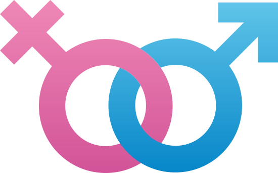

Assegurar o acesso aos serviços de saúde sexual e reprodutiva
A meta 3.7 dos Objetivos de Desenvolvimento Sustentável (ODS) estabelecida pela Organização das Nações Unidas (ONU) até 2030 destaca a importância de assegurar o acesso universal aos serviços de saúde sexual e reprodutiva. Isso inclui o acesso ao planejamento familiar, informações e educação sobre saúde reprodutiva, bem como a integração desses serviços em estratégias e programas nacionais de saúde.
Acesso universal aos serviços de saúde sexual e reprodutiva é fundamental para promover a saúde e o bem-estar das mulheres, homens e adolescentes em todo o mundo. Aqui estão alguns aspectos importantes relacionados a essa meta:
Planejamento Familiar: Garantir o acesso universal ao planejamento familiar é crucial para capacitar os indivíduos a tomarem decisões informadas sobre o tamanho de suas famílias. Isso envolve o acesso a uma variedade de métodos contraceptivos seguros e eficazes, bem como a orientação e apoio necessários para escolher o método mais adequado às necessidades de cada pessoa.
Informação e Educação em Saúde Reprodutiva: O acesso à informação precisa e à educação em saúde reprodutiva é essencial para capacitar as pessoas a tomarem decisões informadas sobre sua saúde sexual e reprodutiva. Isso inclui a educação sobre anatomia, fisiologia, prevenção de doenças sexualmente transmissíveis (DSTs) e promoção de relacionamentos saudáveis.
Serviços de Saúde Reprodutiva: Garantir que os serviços de saúde sexual e reprodutiva sejam acessíveis, inclusivos e de alta qualidade é fundamental. Isso envolve serviços de pré-natal, parto seguro, cuidados pós-parto, prevenção e tratamento de DSTs, além de serviços de saúde sexual e reprodutiva para adolescentes.
Integração nas Estratégias e Programas Nacionais de Saúde: Integrar a saúde reprodutiva em estratégias e programas nacionais de saúde é fundamental para garantir uma abordagem holística e abrangente para a saúde das populações. Isso inclui a integração de serviços de saúde reprodutiva em sistemas de saúde mais amplos e a promoção de políticas que apoiem o acesso igualitário a esses serviços.
Enfoque na Igualdade de Gênero: A promoção da igualdade de gênero é uma parte essencial dessa meta. Isso envolve garantir que homens e mulheres tenham igualdade de acesso aos serviços de saúde sexual e reprodutiva, bem como promover relações saudáveis e respeitosas entre os gêneros.
Alcançar essa meta requer uma abordagem colaborativa entre governos, organizações não governamentais, setor privado e sociedade civil. É essencial superar barreiras culturais, sociais e econômicas que possam impedir o acesso universal a serviços de saúde sexual e reprodutiva. Ao fazê-lo, contribuímos não apenas para a saúde individual, mas também para o desenvolvimento sustentável e a promoção da igualdade de gênero em todo o mundo.